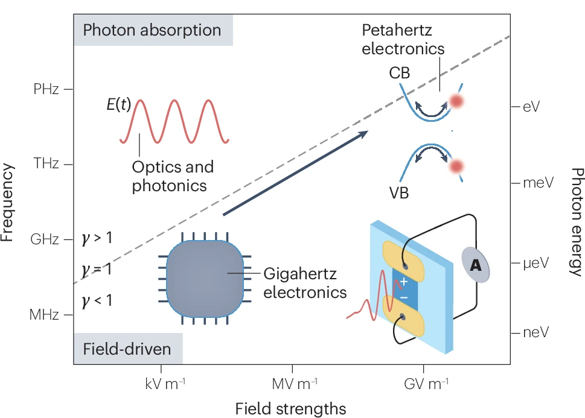
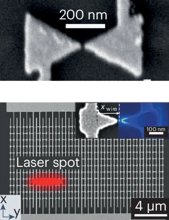
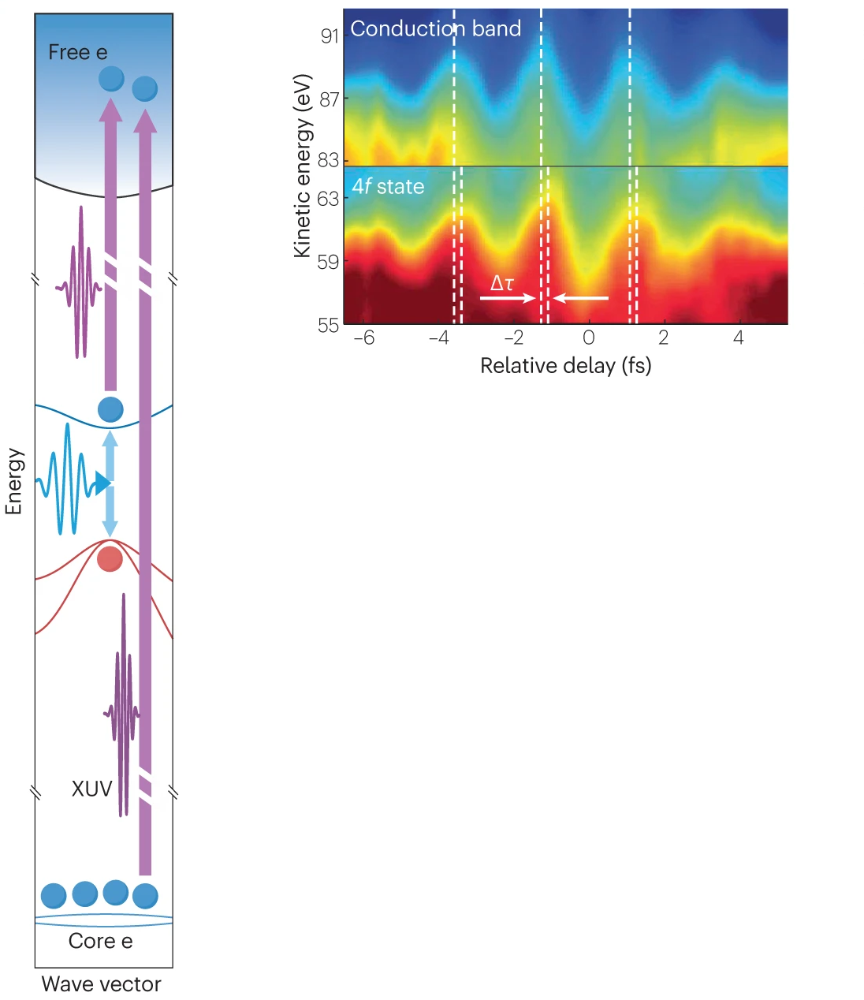
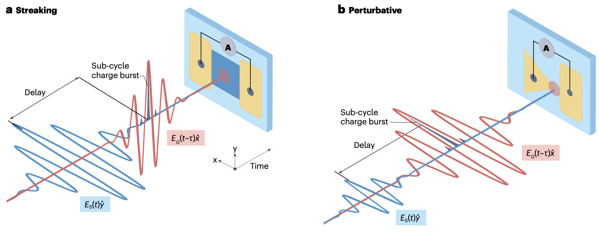
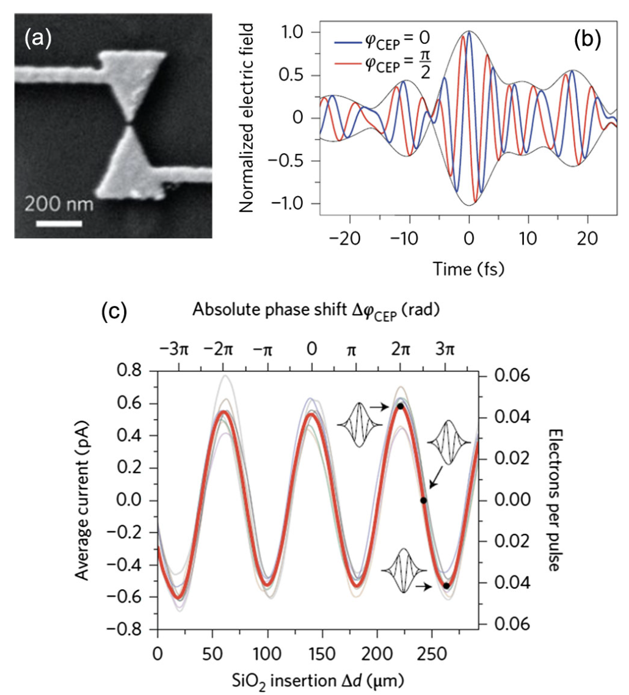

Understand the fundamental differences between strong-field interactions in gases and solids, focusing on intraband and interband dynamics.
Explain how nanostructures and 2D materials are used to enhance and control light-matter interactions.
Describe the working principles of key experimental techniques: attosecond streaking, petahertz current measurements, and optical-field-resolved sampling.
Analyze the experimental evidence for lightwave-driven electronics.
🔍 Prerequisites
This lecture assumes an understanding of solid-state physics (energy bands, Brillouin zones), quantum mechanics (tunneling), and the basics of HHG in solids (interband/intraband currents). We will build on this to explore new concepts and experimental techniques.
1. Core Concepts: Driving Electrons in Solids
Before we begin, consider: When an electron in a solid is accelerated by an external field, does it speed up indefinitely like a free particle?
▶
Unlike a free electron in a vacuum, an electron in a crystal lattice experiences a periodic potential. This has profound consequences for its motion under a strong electric field, giving rise to two key concepts we must understand: Bloch acceleration and the Keldysh parameter.
Intraband Dynamics: Bloch Acceleration and Oscillations
The motion of an electron within a single energy band (intraband motion) is not governed by Newton's law, but by the Bloch acceleration theorem. It states that the electron's crystal momentum, $\mathbf{k}$, changes linearly in time in response to an external electric field, $\mathbf{E}(t)$:
However, the electron's velocity in a particular energy band is given by the group velocity, $v_g(\mathbf{k}) = \frac{1}{\hbar} \nabla_\mathbf{k} \epsilon(\mathbf{k})$, which is proportional to the slope of the energy band $\epsilon(\mathbf{k})$. Because the energy bands are periodic and curved, an electron that is slowly (adiabatically) accelerated towards the edge of the Brillouin zone will slow down, stop (where the band is flat), and then reverse its direction. This periodic motion in real space, driven by a constant electric field, is known as a Bloch oscillation. This highly nonlinear motion is a rich source of high-frequency radiation and a key mechanism in solid-state strong-field physics.
💡 The Keldysh Parameter: Tunneling vs. Multiphoton
How an electron is promoted from the valence band (VB) to the conduction band (CB) depends on the strength and frequency of the laser field. The Keldysh adiabaticity parameter, $\gamma$, elegantly distinguishes between two regimes. For a solid with bandgap $E_{\mathrm{g}}$ and laser frequency $\omega$, it is given by
Here, $m^*$ is the effective reduced mass of the electron-hole pair, and $E_0$ is the peak electric field amplitude.
If $\gamma \gg 1$ (Multiphoton Absorption): The field is relatively weak or oscillates very fast. The electron absorbs multiple photons to bridge the bandgap. The process depends on the laser's cycle-averaged intensity.
If $\gamma \ll 1$ (Field-Driven Tunneling): The field is very strong or has a low frequency. The field "tilts" the bands so severely that the electron can tunnel from a valence band to a conduction band within a fraction of a light cycle. The process is governed by the instantaneous electric field.
Operating in the field-driven regime is the key to lightwave electronics, where we can control electron currents with the waveform of light itself.

Figure 1: The regimes of electronics. At low frequencies and field strengths (bottom left), we have conventional gigahertz electronics. In the optical domain (top), we can have either photon-driven processes ($\gamma > 1$), where the cycle-averaged intensity matters, or field-driven processes ($\gamma < 1$), where the instantaneous electric field controls the current. Petahertz electronics operates in this field-driven regime.
2. The World of Nanostructures & 2D Materials
Before we begin, consider: To reach the strong-field regime ($\gamma \lesssim 1$) in a wide-bandgap material like glass ($E_\mathrm{g} \approx 9$ eV), you need enormous laser intensities, often close to the material's damage threshold. How could you achieve these strong fields locally, using much less laser power?
▶
The answer lies in using precisely engineered nanostructures. These structures, along with atomically thin 2D materials, form the essential platforms for modern lightwave electronics experiments. They allow us to control and enhance light-matter interactions in ways that are impossible in bulk materials.
Nanostructures as Optical Antennas
Metallic or semiconducting nanostructures shaped into tips, bow-ties, or antennas can act as nanoscale lightning rods for light. They exploit plasmonic resonances or geometric effects (like sharp tips) to concentrate the energy of an incident laser pulse into tiny "hot spots".
This near-field enhancement means the local electric field at the structure's apex can be tens or even hundreds of times stronger than the incident laser field. This allows us to:
Reach the strong-field regime with much lower incident laser energies (picojoules instead of microjoules), making experiments more accessible and reducing the risk of bulk damage.
Localize the interaction to a nanometer-scale region, enabling the creation of on-chip devices where current is generated and collected over very short distances.

Figure 2: A scanning electron micrograph of a gold bow-tie nanoantenna designed for lightwave electronics. The sharp tips, separated by a gap of only a few nanometers, create a region of massive electric field enhancement when illuminated by a laser pulse. This allows for field-driven electron emission and current generation at much lower input pulse energies. Such nanoplasmonic structures can be arrayed for increased signal generation.
Atomically Thin 2D Materials
Materials like graphene and transition metal dichalcogenides (TMDs, e.g., $\text{WSe}_2$, $\text{MoS}_2$) offer a unique playground for lightwave electronics. Their properties include:
Unique Band Structures: Graphene's linear, "Dirac cone" band structure leads to unusual electron dynamics. TMDs possess "valleys" in their band structure that can be used to encode information, paving the way for valleytronics.
Reduced Coulomb Screening: Atomically thin 2D materials exhibit enhanced many-body interactions due to a lack of screening, which profoundly influences the Coulomb interaction between electrons.
Exceptional Strength: These materials are mechanically robust and can withstand very high electric fields before breaking down, making them ideal for strong-field experiments.
By combining nanostructured electrodes with 2D materials, we can create hybrid devices that harness the benefits of both platforms for ultimate control over light-driven currents.
3. The Main Experimental Techniques
Before we begin, consider: An electron moves through a crystal, either driven by a light field oscillating every few femtoseconds or leaving the solid within a fraction of a femtosecond. How could you possibly measure this attosecond-scale motion?
▶
Observing and controlling dynamics on the attosecond-to-femtosecond scale requires sophisticated all-optical techniques. Beyond HHG and ATAS/ATRS, several key methods form the bedrock of modern lightwave electronics.
1. Attosecond Streaking in Solids
This is a powerful pump-probe technique for timing electronic processes with attosecond precision. The concept is analogous to its gas-phase counterpart:
An attosecond extreme ultraviolet (XUV) pulse (the "probe") photoionizes an electron from a deep, localized core level. Because this electron's initial state is well-defined, it acts as a precise time reference.
Simultaneously, an intense, few-cycle infrared (IR) pulse (the "pump" or "streaking field") is present. The electric field of this IR pulse accelerates the newly freed electron.
By measuring the final kinetic energy of the electron as a function of the delay between the XUV and IR pulses, we can map out the vector potential of the IR field.
By comparing the streaking trace of an electron from a dynamic valence or conduction band to the reference trace from the static core level, we can measure delays in photoemission or the speed of electronic screening with attosecond resolution.

Figure 3: The principle of attosecond streaking in solids. An XUV pulse excites electrons from a static core level (the reference clock) and a dynamic valence/conduction band. A synchronized, strong IR field ("streaking field") imparts a momentum kick to the photoelectrons. The time delay ($\Delta t$) between the two electron wavepackets arriving at the detector reveals the ultrafast dynamics within the solid.
2. Petahertz Current Measurements
The most direct way to probe lightwave electronics is to simply measure the resulting current. In a typical experiment, a sample (e.g., a dielectric or a 2D material) is placed between two metal electrodes. A few-cycle laser pulse is focused onto the sample. If the pulse waveform is asymmetric (controlled by the Carrier-Envelope Phase, $\varphi_{\mathrm{CE}}$), and the interaction is in the field-driven regime, a net number of electrons will be driven towards one electrode. This creates a tiny, directional current (picoamperes or less) that can be measured with sensitive electronics. By varying the CEP, one can directly control the direction and magnitude of this current, proving that the light's field, not its intensity, is in command.
3. Optical-Field-Resolved Sampling
What if the effect you want to measure is the lightwave itself? Petahertz electronic devices can act as incredibly fast sampling oscilloscopes for light fields. The two main approaches are based on ultrafast photoinjection that "gates" the interaction with a probe pulse:
Light-controlled carrier motion (e.g., Nonlinear Photoconductive Sampling - NPS): A strong "gate" pulse generates a sub-cycle burst of charge carriers in a solid (like $\text{SiO}_2$). A weaker, orthogonally polarized "signal" pulse, which we want to measure, accelerates these carriers towards the collection electrodes. The measured drift current, as a function of the delay between the two pulses, is proportional to the vector potential $A_{\mathrm{s}}(t)$ of the signal field. This resembles attosecond streaking, except that this technique does not measure energy-resolved electron distributions.
Perturbation of strong-field photoinjection: Here, the gate and signal pulses are co-polarized. The strong gate pulse drives a highly nonlinear current emission. The weak signal pulse slightly perturbs this emission. The measured change in current as a function of delay is directly proportional to the electric field $E_{\mathrm{s}}(t)$ of the signal. This method can be extremely sensitive, allowing for the measurement of fields from femtojoule-level pulses.

Figure 4: Two schemes for on-chip optical field sampling. Left: Nonlinear photoconductive sampling in $\text{SiO}_2$, where a gate pulse injects charge and an orthogonal signal pulse "streaks" it, measuring the signal's vector potential. Right: Perturbation of interband tunneling at a plasmonic nanoantenna, where a gate drives emission and a co-polarized signal perturbs it, directly measuring the signal's electric field with femtojoule sensitivity.
4. Case Study: The Birth of Petahertz Electronics
Before we begin, consider: In a normal electrical circuit, a voltage creates a current. How can the oscillating electric field of light, which averages to zero over a cycle, produce a steady, directional DC current?
▶
This is the central magic of petahertz electronics. The key lies in breaking the symmetry of the driving field and ensuring the electron response is fast enough to follow it. This is achieved by using few-cycle laser pulses in the field-driven regime.
Controlling Current with the Carrier-Envelope Phase (CEP)
A laser pulse lasting only a few femtoseconds consists of just a handful of optical cycles contained within an intensity envelope. The carrier-envelope phase ($\varphi_{\mathrm{CE}}$) describes the phase offset of the rapidly oscillating carrier wave with respect to the peak of the pulse envelope.
A pulse with $\varphi_{\mathrm{CE}} = 0$ is "cosine-like". It has its strongest electric field peak aligned with the center of the envelope.
A pulse with $\varphi_{\mathrm{CE}} = \pi/2$ is "sine-like". It has zero field at the center, but two strong, oppositely directed peaks on either side.
Because field-driven tunneling is exponentially sensitive to the instantaneous electric field strength, a cosine-like pulse ($\varphi_{\mathrm{CE}} = 0$) will inject a huge burst of electrons in one direction during the central peak, with much smaller bursts in the opposite direction from the weaker side-lobes. This creates a net directional current. A sine-like pulse ($\varphi_{\mathrm{CE}} = \pi/2$), being symmetric, produces no net current. As you vary the $\varphi_{\mathrm{CE}}$ from 0 to $2\pi$, the asymmetry of the waveform sweeps smoothly, and so does the resulting current—from maximum in one direction, to zero, to maximum in the other direction, and back.

1
Asymmetric Fields: A few-cycle pulse with $\varphi_{\mathrm{CE}} = 0$ (blue) is highly asymmetric, with a single strong positive peak. A pulse with $\varphi_{\mathrm{CE}} = \pi/2$ (red) is anti-symmetric, with balanced positive and negative peaks.
2
Current Response: The measured average current (in picoamperes, pA) across the device oscillates sinusoidally as a function of the CEP, which is controlled by inserting a thin wedge of $\text{SiO}_2$. Maximum positive and negative currents correspond to the most asymmetric waveforms.
Figure 5: Direct control of current with the light field. (Top right) The electric field of a few-cycle pulse for two different CEPs. (Bottom) Experimental data showing that the average current measured across a nano-device oscillates sinusoidally as the CEP is varied. This proves that the current is driven by the field's waveform, not just its intensity, and forms the basis of a light-controlled switch.
From Switches to Logic
This CEP-controlled current is the fundamental building block of a lightwave-driven switch or transistor. The light field acts as the "gate voltage," and the current is the output. Since the response happens on the timescale of the light field itself (~fs), this enables processing speeds in the petahertz ($10^{15}$ Hz) range, millions of times faster than today's gigahertz electronics.
Recent experiments have gone even further. By using two light pulses with controlled waveforms as inputs ('0' or '1') and measuring the total output current, researchers have demonstrated the first all-optical logic gates (AND, OR, etc.) that operate at petahertz speeds, marking a crucial step towards digital lightwave electronics.
Conclusion & Outlook
Key Takeaways from Today's Lecture 🚀
Strong-field physics in solids is governed by the interplay of interband (tunneling) and intraband (Bloch acceleration) dynamics, distinguished by the Keldysh parameter $\gamma$.
Nanostructures and 2D materials are crucial platforms, enabling field enhancement and providing unique electronic properties for controlling light-driven currents.
We can probe these dynamics using techniques like attosecond streaking for timing, direct current measurements to see the net effect, and field sampling to characterize the lightwaves themselves.
By operating in the field-driven regime ($\gamma \lesssim 1$ being a sufficient but not strictly necessary condition) with few-cycle pulses, the CEP can be used to control the direction and magnitude of a current, forming the basis of petahertz electronics.
Light-driven switches and logic gates may lay foundations for future technologies capable of information processing at petahertz frequencies.
The convergence of condensed matter physics and ultrafast science is pushing the frontiers of how we understand and control the quantum world. Current and future research directions include exploring quantum-optical phenomena, attomagnetism, complex quantum materials, as well as developing the first real-world lightwave electronic devices that integrate sources, logic, and detectors on a single chip.